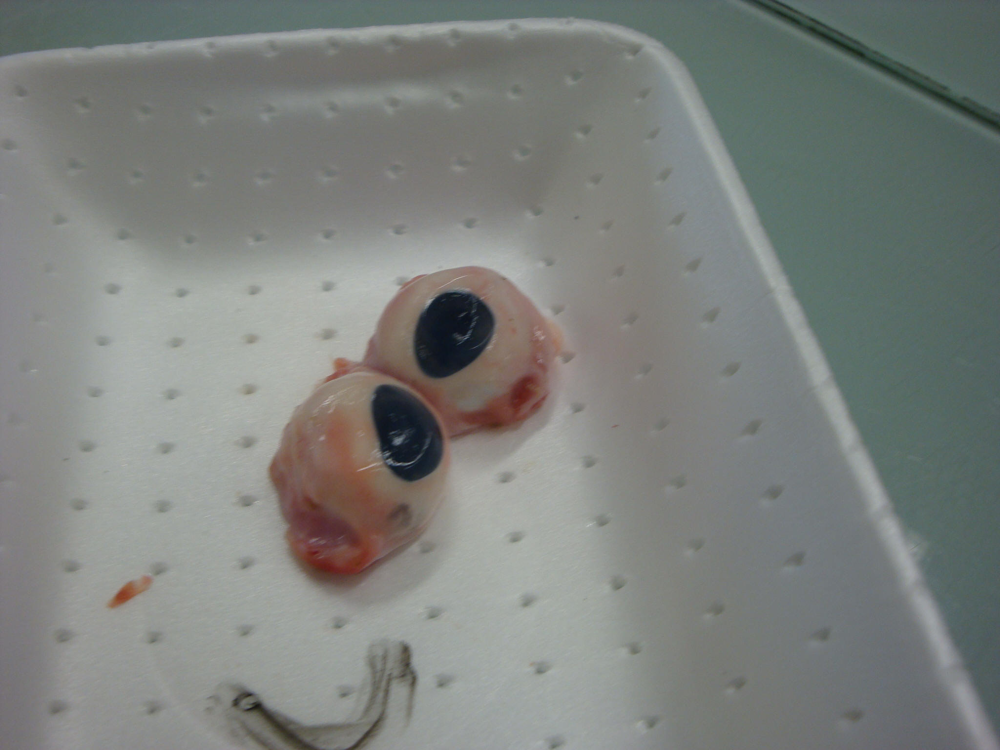
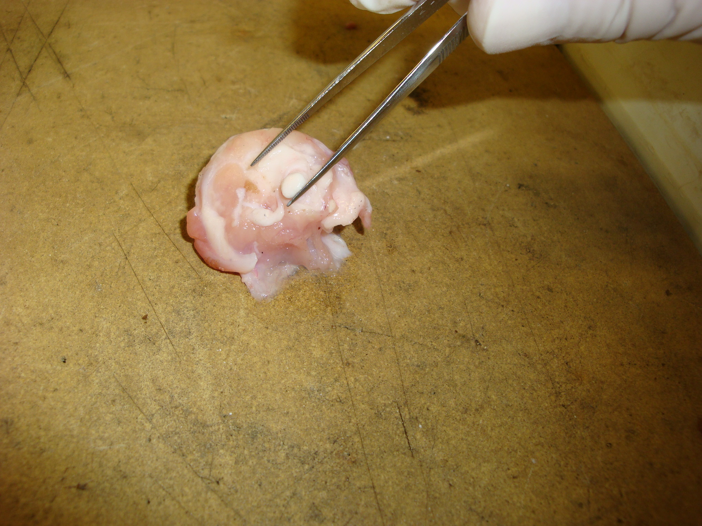
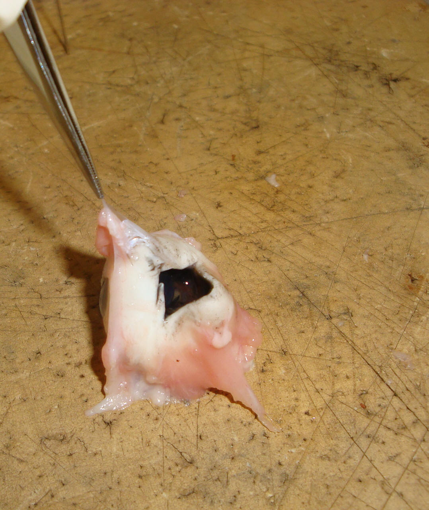
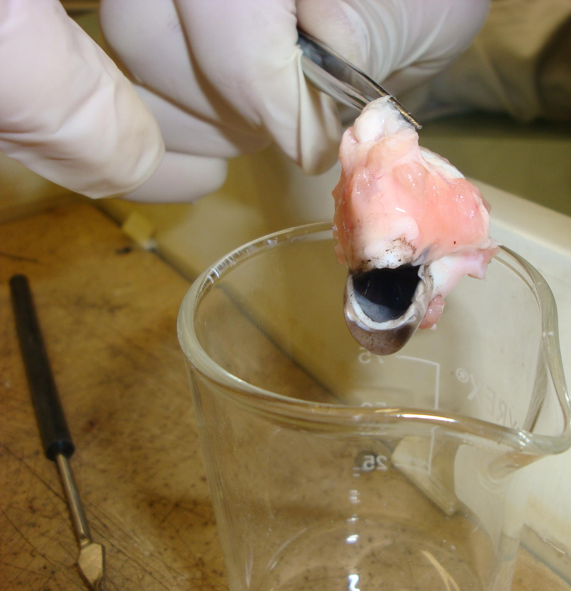
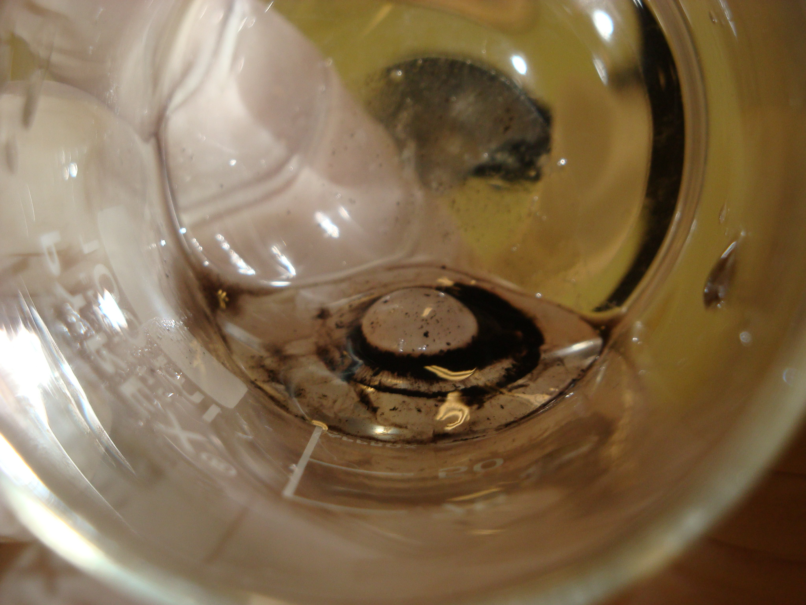
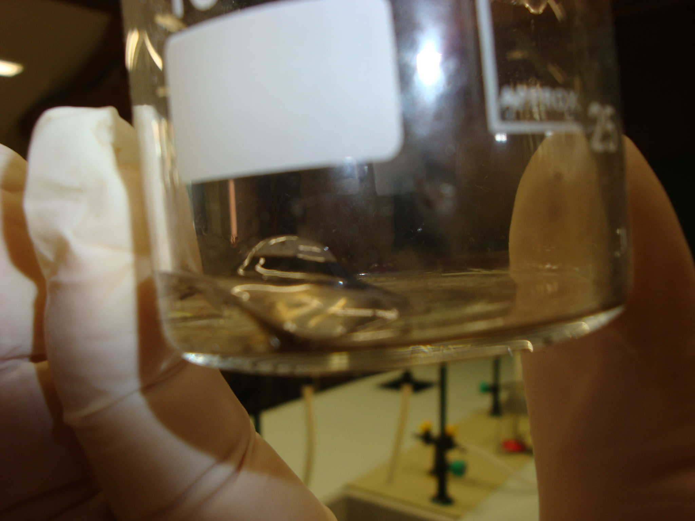
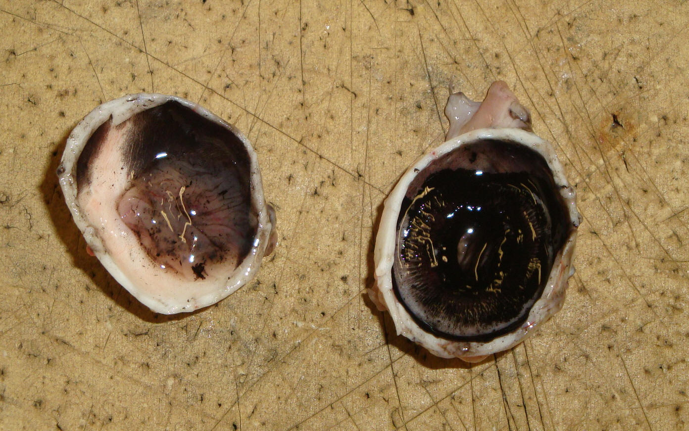
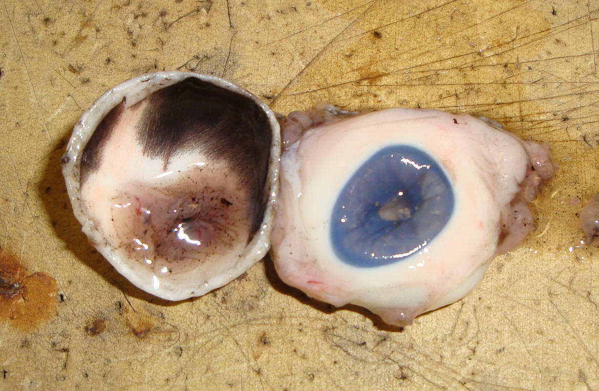
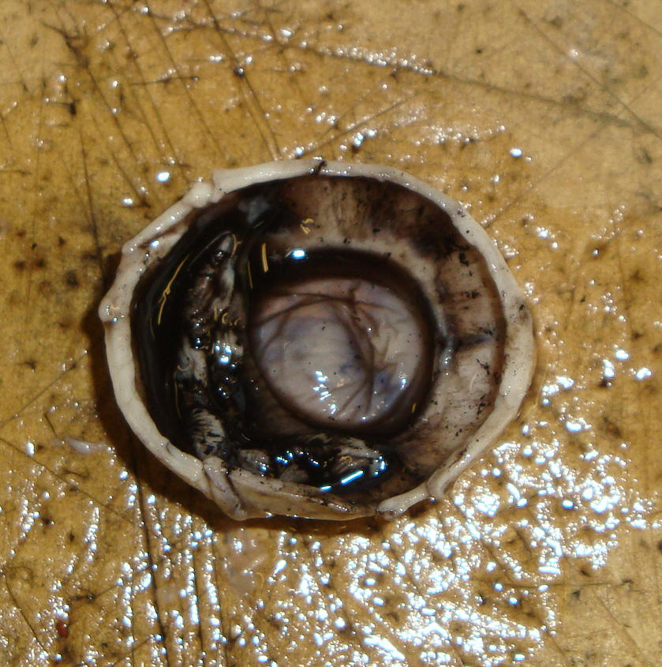

Date :
28/01/2011 Objectif :
Localiser les éléments de l'œil, comprendre sa mécaniqueMatériel :
Trousse de dissection, gants, lunettes de protection, appareil photo, caméraDurée :
2h45Remarque :
L'œil de porc ressemble beaucoup à un œil humain, d'où la raison de son choix.Montrer/Cacher La Photo

Etape 1 : Observations extérieures.
Il s’agit d’un l’œil bleu de porc. Il est en partie recouvert de muscles. Sur la face avant, nous apercevons la pupille, l’iris et la cornée. Au niveau de la partie arrière, nous avons pu observer le nerf optique. Nous avons également pu remarquer la présence de la sclérotique sur l’ensemble de l’œil.Montrer/Cacher La Photo

Etape 2 : Retirer l’ensemble musculaire.
Etape 3 : Découper l’œil transversalement.
Observations :- L’intérieur de l’œil est noir, très certainement pour absorber les rayons lumineux excédentaires. Cela s’appelle la choroïde.
- Dans l’œil était présent un liquide gélatineux. Il s’agit de l’humeur vitrée.
Montrer/Cacher La Photo

Etape 4 : Faire sortir l’humeur vitrée de l’œil.
Observations :- De l’œil sont sortis l’humeur vitrée ainsi qu’un autre élément. Cet élément correspond au cristallin.
- Une fois l’humeur vitrée retirée, nous avons pu apercevoir la pupille et l’iris, vus de l’intérieur.
Montrer/Cacher La Photo

Montrer/Cacher La Photo

Montrer/Cacher La Photo

Etape 5 : Séparer le pôle avant et le pôle arrière de l’oeil
Observations :- Dans le pôle avant, l’iris en vue interne est noir, alors qu’il est ici bleu vu de l’extérieur.
- A l’intérieur du pôle arrière se trouve la rétine, composée de cellules photosensibles et de cellules transmettrices au nerf optique.
Montrer/Cacher La Photo

Montrer/Cacher La Photo

Etape 6 : Enlever l’iris
Observations :- La pupille est en partie recouverte par l’iris.
Montrer/Cacher La Photo

Ce TP s'est déroulé sans incident et il nous a permis de concrétiser les informations vues précédemment dans nos recherches.